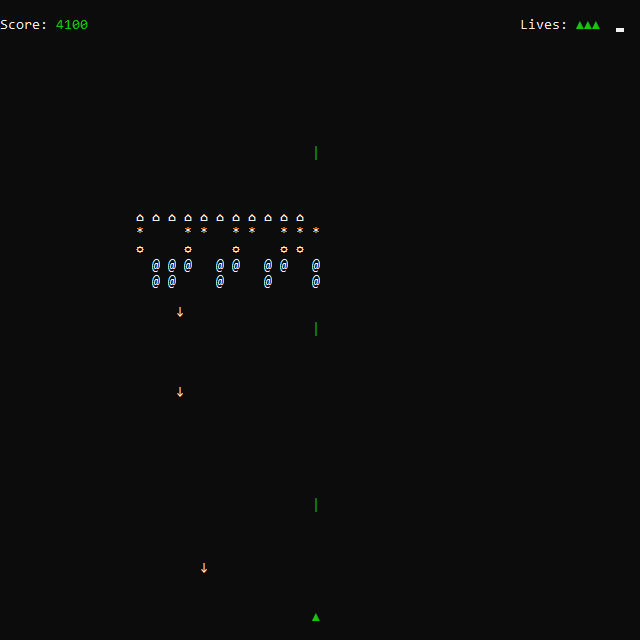

This was another project from my university teaching days like Donkey Kong ASCII. I think this one is a little bit closer to the original source material than Donkey Kong.
Interesting tidbit: when I was running Space Invaders ASCII to get screenshots to put here, I let it just run in the background while I went off to save a screenshot. To my surprise, when I came back to the game it was playing itself! I totally forgot that I added that feature in. Much to my shagrin, the automatic play feature seems to do better than when I play manually.